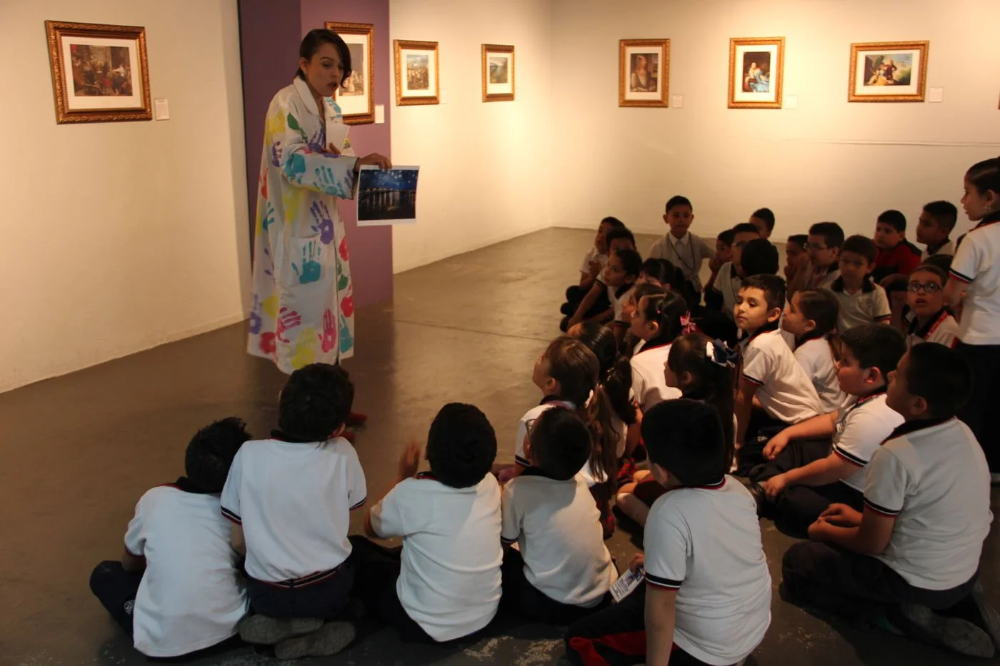

Nereyda
Jiménez
Licenciada en Diseño Gráfico con más de 10 años de experiencia en espacios culturales y museísticos, especializada en mediación educativa, actividades artísticas y coordinación de experiencias para niños, jóvenes y público general.

¿Qué puedo
aportar al aula?
Planeación de clases
Diseño, planeación e impartición de clases y talleres artísticos, con posibilidad de estructurar contenidos y ejercicios de acuerdo con el grupo.
Acompañamiento de grupos
Experiencia en gestión y acompañamiento de grupos de niños y jóvenes, además de atención a público escolar y general.
Explicar con claridad
Comunicación clara, atención cordial y trato respetuoso, con énfasis en enseñar procesos artísticos de manera accesible.
Lenguaje visual
Aplicación y enseñanza de teoría del color, composición visual y fundamentos del diseño.
Educación digital
Producción audiovisual y creación de materiales educativos para plataformas digitales a través de Cursos de Pintura.
Muestras de
enseñanza
Arte como
experiencia
Mi experiencia combina el diseño, las artes visuales y la educación. He participado en la planificación e impartición de talleres de dibujo, pintura y apreciación artística para niños, jóvenes y adultos, además de diseñar actividades educativas para público infantil y grupos escolares.
- Dibujo
- Pintura
- Acrílico
- Óleo pastel
- Carboncillo
- Lápiz
- Técnicas mixtas
- Teoría del color
- Composición visual
- Fundamentos del diseño
Gracias por conocer
mi trabajo.
Estoy interesada en aportar mi experiencia en arte, educación y mediación cultural a un espacio donde niñas, niños y jóvenes puedan desarrollar su creatividad.
nereyda.jr@gmail.comCiudad Obregón, Son.